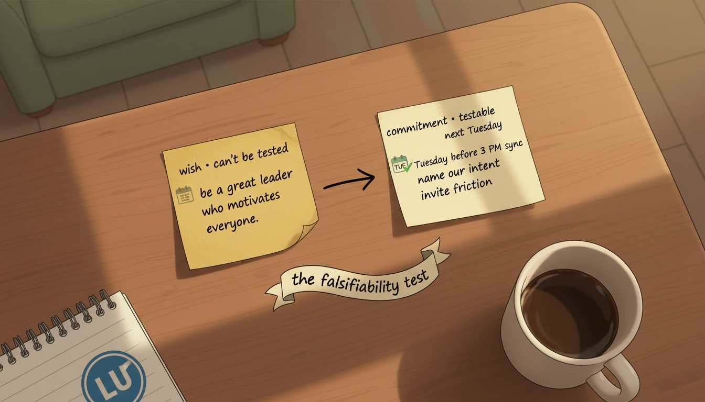

Q1 · LeadContributes to M1: Personal Leadership Canvas17 min read · 90 min workshop
Year 1 · Lesson 01
Leadership in Entrepreneurship
Entrepreneurial leadership is less about authority and more about steady judgment under uncertainty.
In this lesson you'll examine what it takes to lead before anyone formally reports to you — and you'll
draft the first slice of your Personal Leadership Canvas.
Learning objectives
Understand Distinguish entrepreneurial leadership from positional management.
Apply Identify three leadership behaviors you'll practice this quarter.
Apply Draft a one-paragraph Personal Leadership Statement that passes the falsifiability test.
Evaluate Critique a Filipino founder's leadership inflection point using the lesson framework.
Quarter 1 Anchor · Leadership on Entrepreneurship
A short orientation to this quarter's theme — leadership before authority. Watch before diving into Lesson 1.
Section 1
What is entrepreneurial leadership?
Entrepreneurial leadership is the discipline of steady judgment under uncertainty. It is what
you practice when no organizational chart yet exists, when the resources are insufficient, and when the
people around you have signed up because they believe you, not because of a salary line. It is closer
to a craft than to a title.
The traditional management literature locates leadership inside a hierarchy: a manager has direct
reports, a budget, a span of control, an HR system that backstops their authority. Entrepreneurial
leadership inverts that. You must influence outcomes before any of those structures exist.
That changes what good looks like. Clarity of intent replaces formal authority — you
tell people what you are trying to do, again and again, until everyone in the room can repeat it back.
Conviction-with-humility replaces seniority — you commit publicly to a direction while
staying genuinely open to the friction that suggests the direction is wrong.
Storytelling and listening replace memos — you spend time with the people doing the
work, not just the people running the meetings.
This is not soft. It is more demanding than positional management, because every input must be
re-earned. A manager with a budget can issue a directive; an entrepreneurial leader has to keep selling
the mission to the people implementing it. The minute the mission goes silent, attention drifts.
For students, this matters specifically because most of the leadership you will practice in your life
happens before any title is granted to you. Class projects, student organizations, family businesses,
community initiatives, side ventures — these are entrepreneurial-leadership environments by default.
There is no HR system. There is no budget cushion. People are there because they believe in what you
are doing, or because you asked them and they liked you enough to say yes. If you can lead well in
those conditions, you have built the skill that matters most when you eventually do hold a formal
role: the ability to influence outcomes without leaning on the authority of the role itself.
This lesson is the foundation of your year. Everything that follows — teamwork, problem-solving, time
management, adaptability, emotional intelligence, communication, networking, resilience — is a way of
strengthening a specific muscle inside this larger discipline.
Founder Anchor · Soft-skill inflection
Diane Eustaquio
Executive Director, IdeaSpace Foundation (early-stage Filipino startup incubator)
Eustaquio's tenure at IdeaSpace — the Manny V. Pangilinan-backed incubator that has supported
early-stage Filipino tech ventures since the early 2010s — is a study in leading without an
organizational chart. As executive director, she ran a program whose effectiveness depended on
people who had no formal reason to follow her: founders in cohorts who could leave, mentors who
volunteered their time, partner organizations whose support changed year to year, and ecosystem
contributors who participated because they believed in the program's intent.
The lesson she models is the entrepreneurial-leadership case made literal. Authority did not come
from the title — it came from the discipline of repeating-the-why long after others assumed it
was understood, treating contributors with consistent care during periods when the program had
nothing immediate to offer them, and being public about decisions whose justification was
incomplete. That is the practice this lesson is asking you to install now, in the lowest-stakes
settings you currently have access to.
Section 2
Why entrepreneurial leadership is hard
The challenge is not technical. It is the compounding ambiguity. You are asked to make
commitments about an outcome you cannot fully predict, to people whose time and energy depend on those
commitments. Every founder eventually meets this — the moment when the cost of being wrong is no
longer hypothetical. A teammate has missed an exam to attend your strategy session. A community member
has volunteered four Saturdays. A small donor has put up money. Now you are deciding whether to push
forward, pause, or pivot — and you do not have all the information.
Three failure modes show up in the case archive often enough that they are worth naming early.
The first is confusing confidence with information. New leaders who feel decisive
often mistake the feeling of certainty for the presence of evidence. They commit to a direction
because committing feels strong, not because the data supports the commitment. The pattern is
recognizable: a strong opinion delivered before the team has had time to share what they know. The
corrective is humbler than it sounds — say what you believe and ask what is wrong with that belief,
and mean the second half.
The second is confusing listening with consensus. The opposite trap. New leaders who
fear deciding too early can default to gathering input until decisions become impossible. The team
learns that the leader does not actually decide, and the cost of deferral compounds — energy leaks,
people disengage, a competitor moves first. Listening is essential; it is not a substitute for taking
responsibility.
The third is confusing authority with permission. Without a formal role, you can
wonder whether you are allowed to call the meeting, draft the proposal, ask the difficult
question. So you wait for someone else to. The wait turns into a habit. Entrepreneurial leadership
starts by noticing the moments when permission is not actually required, and then acting on them with
care.
The good news is that these failure modes are visible in retrospect. You will catch yourself in one of
them within the next month. When you do, name it out loud. The discipline is not to avoid them — that
is impossible — but to recognize them quickly and recover.
Check your understanding · Q1 of 2
A student leads a campus advocacy group with no formal authority over members. The clearest signal
that the student is practicing entrepreneurial leadership rather than positional leadership
is:
Correct: B. Entrepreneurial leadership shows up as steady articulation of intent plus
responsiveness to friction — not as schedule control (A), abdication (C), or compliance reporting (D).
Section 3
Where entrepreneurial leadership shows up for you, today
You do not need a startup to practice this. Every class project, student organization, family
business, and community initiative is an opportunity to lead before you have the title. The point is
not to perform leadership; it is to develop the judgment under conditions where the cost of being
wrong is small enough to recover from.
Look for the spaces with the lowest stakes and the highest learning rate. A class project of four
people working on a presentation is a higher-quality leadership lab than a one-shot internship in a
200-person company. The class project gives you the entire stack — convening, decision-making,
conflict, follow-through — with consequences scoped to a grade rather than a livelihood. Use it.
A useful test for whether you are already practicing: in any group you currently belong to, can you
point to one moment last week where your contribution shifted what the group did? If yes, you already
have a leadership track record — it just may not be labeled that way yet. Write down the moment.
Reread your description and ask which of the three behaviors from Section 1 — clarity of intent,
conviction-with-humility, listening-as-practice — you used. If you cannot find an example from last
week, that is the first behavior to change. You don't need to find a bigger group; you need to act
differently in the group you are already in.
A second test: in the same group, can you name one person who would describe you as someone who took
initiative this past month? If no one comes to mind, the gap is not knowledge — it's visibility of
intent. People around you don't know what you stand for because you haven't said it. Saying what you
stand for, repeatedly, is the simplest entrepreneurial-leadership behavior to install. It costs
nothing and changes how the groups around you organize.
Watch the video below from Simon Sinek before continuing. His framing of "starting with why" is a
compact version of clarity of intent — the first of the three behaviors named in Section 1. You will
use his framing when you draft your own statement in Section 4.
Watch · Simon Sinek — Start with Why (TEDx, 18 min)
Framing questions
What "why" did Sinek attribute to early Apple — and how is that different from a slogan?
Where in your own emerging leadership does your "why" feel strongest? Where is it still vague?
Pick one Filipino founder you admire — what do you think their "why" is, and what evidence do you have?
Section 4
Building your Personal Leadership Statement

Your task this lesson is to draft the first slice of your Personal Leadership Canvas: a one-paragraph
Personal Leadership Statement. This artifact will sit on page 1 of your team's M1 milestone canvas and
travel with you through the rest of the year.
A useful statement answers three questions in plain language. What do you stand for?
Name the one or two principles that should be visible in how you lead — not aspirational adjectives,
but principles concrete enough that someone could violate them. Who do you intend to
lead? Be specific. The class project group? The student organization you joined this
semester? The household you contribute to? The team you will recruit for your venture? Different
audiences require different leadership behaviors; pick one. What is the first behavior you
will practice this quarter? This is the operating commitment — a recurring action you will
be visible doing.
A good statement passes the falsifiability test: can someone test whether you kept it next
Tuesday?
Consider the difference between these two:
"I want to be a great leader who motivates everyone around me."
This is a wish. It cannot be falsified. Next Tuesday, regardless of what you do, you can claim you
are working on it. There is no concrete behavior to test.
"Every Tuesday before our 3 PM sync, I will publicly name our team's intent for the week and invite
three pieces of friction from members who haven't spoken yet."
This can be falsified. Either you did it on Tuesday or you didn't. The behavior is named, the time is
anchored, the audience is specified, and the action — naming intent and inviting friction — is itself
a leadership move drawn directly from the lesson.
Falsifiability matters because it converts leadership from aspiration to behavior. Aspirations live in
your head; behaviors create evidence in the world. Your team will form an opinion of your leadership
based on what you actually do — not on what your statement says. A falsifiable statement aligns the
two.
When you draft your own, prefer specificity over inspiration. You can revise the wording in the
workshop ahead. The most useful first draft is the one that is most likely to be wrong — because
wrongness is testable, and the next iteration will be sharper for it.
M1
Capstone artifact
This lesson contributes the Personal Leadership Statement page to your Q1 milestone canvas.
At the end of Q1, your team will assemble Milestone 1: Personal Leadership Canvas. This lesson's
deliverable is page 1 of that canvas — your one-paragraph leadership statement. The .docx canvas has
the page ready for you.
Which of the following Personal Leadership Statements is most likely to actually shape behavior this
quarter?
Correct: C. A leadership statement is useful only when it is falsifiable in a short
timeframe. C names a recurring concrete behavior with a time anchor and audience; A, B, and D are
aspirational but can't be tested next Tuesday.
Workshop·90 min
Personal Leadership Statement Lab
👥 4-person team📄 .docx canvas🎯 1 statement / person
Goal
Each team member exits with a Personal Leadership Statement that is concrete enough to be falsified by next Tuesday.
Roles (rotate by lesson)
Facilitator — keeps the team to time and reads the prompt.
Timekeeper — calls 5-minute warnings before each phase ends.
Scribe — captures friction surfaced during peer review.
Presenter — reads the team's strongest example aloud at the end.
Steps
T+0Frame: facilitator reads the prompt and the falsifiability test. Each member opens their canvas page 1. (10 min)
T+10Diverge: each member silently drafts three candidate statements, written in their own voice. (20 min)
T+30Converge: each member reads their three; the team selects one per member to refine and applies the falsifiability test. (20 min)
T+50Build: each member writes their refined statement onto page 1 of the .docx canvas. (30 min)
T+80Peer review: presenter reads the team's strongest; scribe captures one falsifiability concern per statement. Members revise once. (10 min)
Worked example
Team A's first draft was "I will lead with empathy." Their facilitator read the falsifiability test
and the team rewrote it to "Every Friday, before our org meeting ends, I will check in 1:1 with the
member who spoke least during the meeting." Same intent — but now testable next Friday.
Success criterion
Every statement contains: (1) a recurring time anchor, (2) a specific behavior, (3) a concrete audience.
Rubric
Apply the College Master Rubric (Emerging · Developing · Proficient · Distinguished) — see
College_Workshop_Rubric.md. The L1 worked
specialization is documented there in full.
Solo fallback. Working on your own? Run the same steps using the .docx canvas plus
an AI-roleplay partner: ask the assistant to play a skeptical peer reviewer and apply the
falsifiability test to each candidate statement. Submit the same artifact plus a 3-round feedback
log.
Reflection · journal entry
Where did you lead before you had the title?
Write 300-400 words. Be specific. Name one moment from the past year, describe what you did, and
identify which behavior from this lesson it most resembled (clarity of intent · conviction-with-humility
· listening-as-practice). The point is not to find a heroic story — it is to recognize that you have
already been practicing leadership in places that didn't have a title attached.
Leadership is not what you say in a manifesto. It is what your team can predict you'll do next
Tuesday — and whether what you do next Tuesday is the same as what you said.